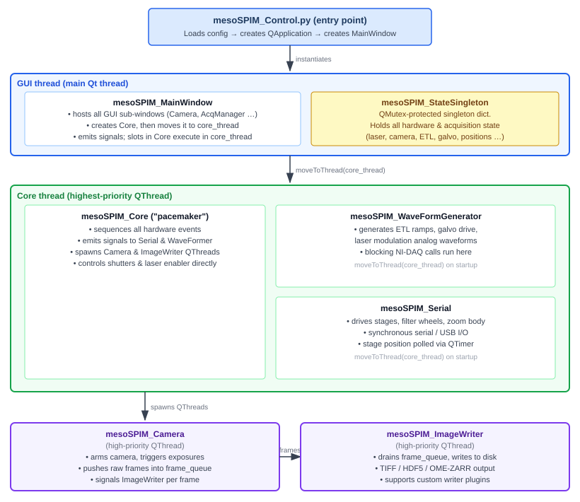

API Reference¶
Auto-generated API documentation from source docstrings.
Architecture Overview¶
mesoSPIM-control is a PyQt5 application built around a strict thread-safety model.
All inter-component communication goes through Qt signals and slots (using
QueuedConnection so that callers never block the GUI event loop). The diagram
below shows how the major pieces fit together:

Key architectural concepts¶
- mesoSPIM_StateSingleton (
src/mesoSPIM_State.py) A mutex-protected singleton dictionary that stores the complete hardware and acquisition state: laser selection, camera exposure, stage positions, ETL/galvo parameters, current acquisition list, and more. All threads read and write state through this object using
QMutexfor thread safety.- mesoSPIM_Core (
src/mesoSPIM_Core.py) The orchestration layer — described in its own docstring as “the pacemaker of a mesoSPIM”. It does not perform hardware I/O itself; instead it emits signals to the worker threads in the correct order and waits for their acknowledgement via
BlockingQueuedConnectionwhen synchronisation is required.- Worker threads
Only two worker objects run on dedicated
QThreadinstances:mesoSPIM_Camera— arms the camera, triggers exposures, and pushes raw frames into a shareddeque(frame_queue).mesoSPIM_ImageWriter— consumesframe_queueand writes files; supports a plugin API (src/plugins/ImageWriterApi.py) for custom output formats.
mesoSPIM_WaveFormGeneratorandmesoSPIM_Serialboth live in the Core thread alongsidemesoSPIM_Coreitself. The waveformer performs blocking NI-DAQ calls, and the serial worker performs synchronous serial/USB calls, both within the Core event loop. (ABlockingQueuedConnectionfrom Core to either of those workers would deadlock, which is whyQueuedConnectionis used throughout.)- Device abstraction (
src/devices/) Every hardware class has a
Demo_*counterpart that simulates the device in software. The correct class is selected at runtime from the config file, so the full acquisition pipeline can be exercised without physical hardware.- GUI sub-windows (
src/mesoSPIM_*Window.py) Thin PyQt5 views wired to MainWindow signals. They never touch hardware directly — all user actions are translated into signal emissions that travel to Core and then onwards to the appropriate worker.
- Configuration files (
config/*.py) Plain Python modules imported at startup. A configuration file declares dictionaries (
camera_parameters,stage_parameters,laser_parameters, etc.) that Core and the device classes read to select hardware drivers and calibration values.- Plugin system (
src/plugins/) Custom image writers can be registered via
PluginRegistryandImageWriterApi, allowing new file formats or live-streaming sinks to be added without modifying the core acquisition loop.
Core modules¶
mesoSPIM_Core¶
Core for the mesoSPIM project
- mesoSPIM.src.mesoSPIM_Core.logger = <Logger mesoSPIM.src.mesoSPIM_Core (WARNING)>¶
PyQt5 Imports
- class mesoSPIM.src.mesoSPIM_Core.mesoSPIM_Core(*args: Any, **kwargs: Any)[source]¶
Bases:
QObjectThis class is the pacemaker of a mesoSPIM
- append_timing_info_to_metadata(acq)[source]¶
Appends a metadata.txt file Path contains the file to be written
- check_motion_limits(acq_list)[source]¶
Check if the motion limits of the stage are violated for each acquisition in the given list.
- close_acquisition(acq, acq_list)[source]¶
Finalise a single acquisition: flush the image series, collect timing, and increment the counter.
Also disables TTL motion if it was enabled for ASI stages, and appends timing metadata to the sidecar file.
- Parameters:
acq (Acquisition) – The just-completed acquisition.
acq_list (AcquisitionList) – Full list being executed.
- close_shutters()¶
If shutterswitch = True in the config: Assumes that the shutter_left line is the general shutter and the shutter_right line is the left/right switch (Right==True)
- execute_galil_program()[source]¶
Little helper method to execute the program loaded onto the Galil stage: allows hand controller to operate
- execute_script(script)¶
Execute a user-provided Python script string inside the Core event loop.
The script runs with access to
self(the Core object) so it can call any public API method. Errors are caught viatraceback.print_exc().- Parameters:
script (str) – Valid Python source code to execute.
- frame_queue_display¶
The signal-slot switchboard
- get_free_disk_space(acq_list)[source]¶
Take the disk location of the first file and compute the free disk space
- get_required_disk_space(acq_list)[source]¶
“Compute total image data size from the acquisition list, in bytes
- lightsheet_alignment_mode()[source]¶
Continuous live mode that alternates left/right shutters for dual-lightsheet co-alignment.
Loops until
self.stopflagis set, alternating'Left'and'Right'shutter configs between snaps.
- list_to_string_with_carriage_return(input_list)[source]¶
Join list items into a newline-separated string for warning dialogs or logs.
- live()[source]¶
Run a continuous live-preview loop using the current state parameters.
Starts the camera in live mode, streams frames to the camera window via
frame_queue_display, and drives NI-DAQ waveforms repeatedly untilstop()setsself.stopflag = True.
- move_absolute(sdict, wait_until_done=False, use_internal_position=True)¶
Move one or more stage axes to an absolute position.
- Parameters:
sdict (dict) – Axis → target mapping, e.g.
{'z_abs': 5000.0}(in μm).wait_until_done (bool) – If
True, calls the serial worker directly (bypassing the signal) to block until the move completes.use_internal_position (bool) – When
True, the stage applies the user-visible offset stored inmesoSPIM_StateSingleton.
- move_relative(dict, wait_until_done=False)¶
Move one or more stage axes by a relative offset.
- open_shutters()¶
Here the left/right mode is hacked in If shutterswitch = True in the config: Assumes that the shutter_left line is the general shutter and the shutter_right line is the left/right switch (Right==True)
- preview_acquisition(z_update=True)[source]¶
Drive the stages along the start/end positions of the selected acquisition without acquiring images.
Useful for visually verifying sample placement and focus before a full run.
- Parameters:
z_update (bool) – If
True, move z to the acquisition start z; ifFalse, keep z at its current position and only update x/y/f/theta.
- read_config_parameter(key, dictionary)[source]¶
Helper method to check if key exists in the dictionary and read its value, or throw a meaningful error
- run_acquisition(acq, acq_list)[source]¶
Execute a single acquisition: start waveforms, trigger the camera, and collect frames.
Steps the z (and optionally f) axis
acq.get_image_count()times, emittingsig_add_images_to_image_seriesat each plane so the ImageWriter receives frames in order. Honoursself.stopflagfor mid-acquisition abort.- Parameters:
acq (Acquisition) – Acquisition descriptor for the current volume.
acq_list (AcquisitionList) – Full list (provides tile/channel/rotation context).
- run_acquisition_list(acq_list)[source]¶
Iterate over every acquisition in acq_list and image each one.
For each
Acquisition, callsprepare_acquisition(),run_acquisition(), andclose_acquisition()sequentially, unlessself.stopflagis set.- Parameters:
acq_list (AcquisitionList) – The list of acquisitions to execute.
- run_time_lapse(tpoints=1, time_interval_sec=60)[source]¶
A quick and dirty implementation of time lapse via recursive function.
- send_progress(cur_acq, tot_acqs, cur_image, images_in_acq, total_image_count, image_counter, time_passed_string, remaining_time_string)[source]¶
- send_status_message_to_gui(string)¶
Emit a status string to the main window status bar.
- Parameters:
string (str) – Human-readable message to display.
- set_camera_exposure_time(time)¶
Forward a new exposure time (in seconds) to the waveform generator state.
- Parameters:
time (float) – Exposure duration in seconds.
- set_camera_line_interval(time)¶
Forward a new camera line interval (sCMOS rolling-shutter timing) to the waveform generator state.
- Parameters:
time (float) – Line interval in seconds.
- set_filter(filter, wait_until_done=False)¶
Switch the emission filter wheel to the named filter position.
- set_intensity(intensity, wait_until_done=False)¶
Set the laser intensity (analogue voltage) via the waveform generator.
- set_laser(laser, wait_until_done=False, update_etl=True)¶
Select the active laser line and optionally reload ETL parameters for it.
- set_shutterconfig(shutterconfig)¶
Select which light-sheet shutter(s) are opened during illumination.
- Parameters:
shutterconfig (str) – One of
'Left','Right','Both', or'Interleaved'.
- set_state(state)[source]¶
Dispatch a high-level state string to the appropriate acquisition method.
Accepted values and their effect:
'live'— start continuous live preview.'snap'— acquire and save a single snap image.'run_selected_acquisition'— run the row currently selected in the Acquisition Manager table.'run_acquisition_list'— run every acquisition in the list.'preview_acquisition_with_z_update'/'preview_acquisition_without_z_update'— drive stages to the start/end of an acquisition without recording.'idle'— stop all ongoing activities.'lightsheet_alignment_mode'/'visual_mode'— special live modes.
- Parameters:
state (str) – One of the state strings listed above.
- set_zoom(zoom, wait_until_done=True, update_etl=True)¶
Move the zoom body / objective revolver and optionally update ETL calibration.
If
f_objective_exchangeis configured in the stage parameters, the focus axis is first driven to the exchange position before the zoom changes, then returned to its previous value.
- sig_add_images_to_image_series¶
alias of
Acquisition
- sig_end_image_series¶
alias of
Acquisition
- sig_end_live¶
Movement-related signals:
- sig_polling_stage_position_start¶
ETL-related signals
- sig_polling_stage_position_stop¶
ETL-related signals
- sig_prepare_image_series¶
alias of
Acquisition
- sig_write_metadata¶
alias of
Acquisition
- snap_image(laser_blanking=True)[source]¶
Snaps a single image after updating the waveforms.
Can be used in acquisitions where changing waveforms are required, but there is additional overhead due to the need to write the waveforms into the buffers of the NI cards.
- snap_image_in_series(laser_blanking=True)[source]¶
Snaps and image from a series without waveform update
- start(row=None)[source]¶
Entry point for running one selected acquisition or the full acquisition list.
Performs pre-flight checks (disk space, motion limits), then delegates to
run_acquisition_list()orrun_selected_acquisition().- Parameters:
row (int | None) – Table row index to run, or
Noneto run all rows.
- state_request_handler(dict)¶
- stop_movement()¶
Send an emergency stop signal to all stage axes.
- unzero_axes(list)¶
Restore the physical (absolute) coordinate system for the given axes.
mesoSPIM_State¶
mesoSPIM State class. Only nominally a singleton class, but actually inherited by classes from their parent class.
- class mesoSPIM.src.mesoSPIM_State.mesoSPIM_StateSingleton(*args, **kwargs)[source]¶
Bases:
QObjectSingleton object containing the whole mesoSPIM state.
Only classes which control.
Access to attributes is mutex-locked to allow access from multiple threads.
If more than one state parameter should be set at the same time, the set_parameter
- get_parameter_dict(list)[source]¶
For a list of keys, get a state dict with the current values back.
All the values are read out under a QMutexLocker so that the state cannot be updated at the same time.
- get_parameter_list(list)[source]¶
For a list of keys, get a state list with the current values back.
This is especially useful for unpacking.
All the values are read out under a QMutexLocker so that the state cannot be updated at the same time.
- instance = None¶
- mutex = <PyQt5.QtCore.QMutex object>¶
mesoSPIM_Camera¶
mesoSPIM Camera class, intended to run in its own thread
- class mesoSPIM.src.mesoSPIM_Camera.mesoSPIM_Camera(*args: Any, **kwargs: Any)[source]¶
Bases:
QObjectTop-level class for all cameras
- add_images_to_series(**kwargs)¶
- end_image_series(acq, acq_list)¶
- end_live()¶
- get_live_image()¶
- prepare_image_series(acq, acq_list)¶
Row is a row in a AcquisitionList
- prepare_live()¶
- set_camera_exposure_time(time)[source]¶
Sets the exposure time in seconds
- Parameters:
time (float) – exposure time to set
- set_camera_line_interval(time)[source]¶
Sets the line interval in seconds
- Parameters:
time (float) – interval time to set
- sig_write_images¶
alias of
Acquisition
- snap_image(write_flag=True)¶
“Snap an image and display it
- state_request_handler(dict)¶
The request handling is done with exec() to write fewer lines of code.
- stop()¶
Stops acquisition
- class mesoSPIM.src.mesoSPIM_Camera.mesoSPIM_DemoCamera(*args: Any, **kwargs: Any)[source]¶
Bases:
mesoSPIM_GenericCameraSoftware-only camera driver for use without physical hardware.
Generates synthetic sinusoidal fringe images so that the GUI, image writer, and acquisition-sequencing logic can be exercised without a physical camera. Used for development, demos, and CI/testing.
- class mesoSPIM.src.mesoSPIM_Camera.mesoSPIM_GenericCamera(*args: Any, **kwargs: Any)[source]¶
Bases:
QObjectAbstract base class for all mesoSPIM camera drivers.
Concrete subclasses override the hardware-interaction methods listed below. The base class reads sensor dimensions and binning from
cfg.camera_parametersand provides no-op stubs for every camera lifecycle method.Lifecycle sequence expected by
mesoSPIM_Core:Live mode:
open_camera→initialize_live_mode→get_live_image(repeated) →close_live_mode→close_cameraAcquisition:
open_camera→initialize_image_series→get_images_in_series(repeated) →close_image_series→close_camera
All subclass instances run in the Camera thread (a high-priority
QThreadspawned inmesoSPIM_Core).
- class mesoSPIM.src.mesoSPIM_Camera.mesoSPIM_HamamatsuCamera(*args: Any, **kwargs: Any)[source]¶
Bases:
mesoSPIM_GenericCameraCamera driver for Hamamatsu ORCA-Flash / ORCA-Fusion cameras.
Uses the hamamatsu_camera Python wrapper (a ctypes-based interface to the DCAM-API SDK included in
devices/cameras/hamamatsu/). Sensor mode, defect correction, binning, and readout speed are applied atopen_camera()time fromcfg.camera_parameters.
- class mesoSPIM.src.mesoSPIM_Camera.mesoSPIM_PCOCamera(*args: Any, **kwargs: Any)[source]¶
Bases:
mesoSPIM_GenericCameraCamera driver for PCO scientific cameras (e.g. pco.edge sCMOS).
Uses the
pcoPython SDK (pip install pco). Acquires frames in rolling-shutter light-sheet mode; frame transfer timing is set by the global line interval fromcfg.startup.
- class mesoSPIM.src.mesoSPIM_Camera.mesoSPIM_PhotometricsCamera(*args: Any, **kwargs: Any)[source]¶
Bases:
mesoSPIM_GenericCameraCamera driver for Photometrics (Teledyne) sCMOS cameras.
Uses the
pyvcamPython SDK. Requires the PVCAM runtime to be installed on the host PC. Camera properties (speed table index, port index, gain, exposure mode) are configured incfg.camera_parameters.- initialize_image_series()[source]¶
The Photometrics cameras expect integer exposure times, otherwise they default to the minimum value
mesoSPIM_Stages¶
mesoSPIM Stage classes¶
- class mesoSPIM.src.mesoSPIM_Stages.mesoSPIM_ASI_Stages(*args: Any, **kwargs: Any)[source]¶
Bases:
mesoSPIM_StageStage driver for Applied Scientific Instrumentation (ASI) Tiger or MS-2000 controllers.
Communicates via serial (RS-232) using the ASI ASCII protocol through
mesoSPIM.src.devices.stages.asi.asicontrol.StageControlASI. Supports TTL-triggered motion viaenable_ttl_motion()andexecute_program().Config file keys are defined in
cfg.asi_parameters.- load_sample()[source]¶
Move the Y axis to
cfg.stage_parameters['y_load_position'](sample exchange position).
- log_slice(dictionary)¶
- move_absolute(dict, wait_until_done=False, use_internal_position=True)[source]¶
ASI move absolute method
Lots of implementation details in here, should be replaced by a facade
- class mesoSPIM.src.mesoSPIM_Stages.mesoSPIM_DemoStage(*args: Any, **kwargs: Any)[source]¶
Bases:
mesoSPIM_StageSoftware-only stage for use without physical hardware.
All movement commands are handled by the base-class
mesoSPIM_Stageimplementation, which simply updates the internal position variables and optionally waits a short delay to simulate motion settle time. No serial or USB connections are opened. Intended for development, demos, and CI/testing.
- class mesoSPIM.src.mesoSPIM_Stages.mesoSPIM_PI_1toN(*args: Any, **kwargs: Any)[source]¶
Bases:
mesoSPIM_StageConfiguration with 1 controller connected to N stages, (e.g. C-884, default mesoSPIM V5 setup).
Note: configs as declared in mesoSPIM_config.py:
- stage_parameters = {‘stage_type’‘PI_1controllerNstages’,
… }
- pi_parameters = {‘controllername’‘C-884’,
‘stages’ : (‘L-509.20DG10’,’L-509.40DG10’,’L-509.20DG10’,’M-060.DG’,’M-406.4PD’,’NOSTAGE’), ‘refmode’ : (‘FRF’,), ‘serialnum’ : (‘118075764’), }
- block_till_controller_is_ready()[source]¶
Blocks further execution (especially during referencing moves) till the PI controller returns ready
- load_sample()[source]¶
Move the Y axis to
cfg.stage_parameters['y_load_position'](sample exchange position).
- move_absolute(sdict, wait_until_done=False, use_internal_position=True)¶
Lots of implementation details in here, should be replaced by a facade
TODO: Also lots of repeating code. TODO: DRY principle violated
- move_relative(sdict, wait_until_done=False)¶
PI move relative method
Lots of implementation details in here, should be replaced by a facade
- pitools¶
Setting up the PI stages
- stop()¶
- class mesoSPIM.src.mesoSPIM_Stages.mesoSPIM_PI_NtoN(*args: Any, **kwargs: Any)[source]¶
Bases:
mesoSPIM_Stage- Expects following microscope configuration:
Sample XYZ movement: Physik Instrumente stage with three L-509-type stepper motor stages and individual C-663 controller. F movement: Physik Instrumente C-663 controller and custom stage with stepper motor Rotation: not implemented
All stage controller are of same type and the sample stages work with reference setting. Focus stage has reference mode set to off.
Note
configs as declared in mesoSPIM_config.py: stage_parameters = {‘stage_type’ : ‘PI_NcontrollersNstages’,
… }
- pi_parameters = {‘axes_names’: (‘x’, ‘y’, ‘z’, ‘theta’, ‘f’),
‘stages’: (‘L-509.20SD00’, ‘L-509.40SD00’, ‘L-509.20SD00’, None, ‘MESOSPIM_FOCUS’), ‘controllername’: (‘C-663’, ‘C-663’, ‘C-663’, None, ‘C-663’), ‘serialnum’: (’******’, ‘******’, ‘******’, None, ‘******’), ‘refmode’: (‘FRF’, ‘FRF’, ‘FRF’, None, ‘RON’) }
make sure that reference points are not in conflict with general microscope setup and will not hurt optics under referencing at startup
- class mesoSPIM.src.mesoSPIM_Stages.mesoSPIM_PI_rotz_and_Galil_xyf_Stages(*args: Any, **kwargs: Any)[source]¶
Bases:
mesoSPIM_StageStage driver combining a Physik Instrumente Z- and rotation axes with Galil-driven XYF axes.
Sample XYF movement: Galil controller with 3 axes Z-Movement and Rotation: PI C-884 mercury controller
- block_till_controller_is_ready()[source]¶
Blocks further execution (especially during referencing moves) till the PI controller returns ready
- f_encodercounts_per_um¶
XYZ
- Type:
Setting up the Galil stages
- load_sample()[source]¶
Move the Y axis to
cfg.stage_parameters['y_load_position'](sample exchange position).
- move_absolute(dict, wait_until_done=False, use_internal_position=True)[source]¶
Galil move absolute method
Lots of implementation details in here, should be replaced by a facade
- move_relative(sdict, wait_until_done=False)[source]¶
Galil move relative method
Lots of implementation details in here, should be replaced by a facade
- pitools¶
Setting up the PI stages
- xyf_stage¶
PI-specific code
- class mesoSPIM.src.mesoSPIM_Stages.mesoSPIM_Stage(*args: Any, **kwargs: Any)[source]¶
Bases:
QObjectAbstract base class for all mesoSPIM stage drivers.
Concrete subclasses (
mesoSPIM_DemoStage,mesoSPIM_PI_1toN,mesoSPIM_PI_NtoN,mesoSPIM_PI_rotz_and_Galil_xyf_Stages,mesoSPIM_ASI_Stages) implement the hardware-specific communication.The base class provides:
A 100 ms
QTimerthat callsreport_position()to keep the GUI position readouts up to date.Software (“internal”) position tracking with per-axis zeroing offsets so that users can zero any axis without the physical stage moving.
Motion-limit checking using
cfg.stage_parameters(x_min,x_max,y_min,y_max, etc., all in micrometres).Default implementations of
load_sample(),unload_sample(), andcenter_sample()driven by config values.
This object is owned by
mesoSPIM_Serialand therefore lives in the Core thread.- center_sample()[source]¶
Move X (and optionally Z) to the configured center / midpoint position.
Values are taken from
cfg.stage_parameters['x_center_position']andcfg.stage_parameters['z_center_position']. If a key is absent the corresponding axis is left at its current position and a message is logged.
- create_internal_position_dict()[source]¶
Populate
self.int_position_dictwith the user-visible (software-zeroed) axis positions.
- create_position_dict()[source]¶
Populate
self.position_dictwith the current raw (hardware) axis positions and store it instate['position_absolute'].
- int_theta_pos¶
Create offsets
It should be:
int_x_pos = x_pos + int_x_pos_offset self.int_x_pos = self.x_pos + self.int_x_pos_offset
OR
x_pos = int_x_pos - int_x_pos_offset self.x_pos = self.int_x_pos - self.int_x_pos_offset
- int_theta_pos_offset¶
currently hardcoded
Open question: Should these be in mm or microns? Answer: Microns for now….
- Type:
Setting movement limits
- load_sample()[source]¶
Move the Y axis to
cfg.stage_parameters['y_load_position'](sample exchange position).
- move_absolute(dict, wait_until_done=False, use_internal_position=True)¶
Move one or more axes to absolute target positions (demo / base-class implementation).
- Parameters:
dict (dict) – Axis → target mapping in micrometres, e.g.
{'x_abs': 5000.0, 'z_abs': -200.0}.wait_until_done (bool) – If
True, block for 1 s and confirm completion viareport_position().use_internal_position (bool) – When
Truethe zeroing offsets are subtracted so that the user sees the zeroed coordinate system.
- move_relative(sdict, wait_until_done=False)¶
Move one or more axes by a relative offset (demo / base-class implementation).
- Parameters:
sdict (dict) – Axis → step mapping in micrometres, e.g.
{'z_rel': -100.0, 'f_rel': 50.0}.wait_until_done (bool) – If
True, block for 100 ms and callreport_position()to simulate a settle delay.
- report_position()¶
Read current positions, apply zeroing offsets, update state, and emit
sig_position.Called automatically every 100 ms by the internal
QTimerand also explicitly after blocking moves (wait_until_done=True).
- state¶
The movement signals are emitted by the mesoSPIM_Core, which in turn instantiates the mesoSPIM_Serial object, both (must be) running in the same Core thread.
Therefore, the signals are emitted by the parent of the parent, which is slightly confusing and dirty.
- stop()¶
Immediately stop all axis motion and emit a ‘Stopped’ status message.
- theta_pos¶
Internal (software) positions
mesoSPIM_ImageWriter¶
mesoSPIM Image Writer class, intended to run in the Camera Thread and handle file I/O
- class mesoSPIM.src.mesoSPIM_ImageWriter.mesoSPIM_ImageWriter(*args: Any, **kwargs: Any)[source]¶
Bases:
QObjectImage and metadata writer that runs in its own high-priority QThread.
Consumes raw frames pushed into
frame_queuebymesoSPIM_Cameraand writes them to disk using a pluggable writer backend (TIFF, HDF5, OME-ZARR, …). Writer backends are selected per-acquisition via theimage_writer_pluginfield of eachAcquisition.Signals are connected by
mesoSPIM_Coreduring construction.- abort_writing()¶
Terminate writing and close all files if STOP button is pressed
- end_acquisition(acq, acq_list)¶
Finalise and close the writer backend after the last frame of an acquisition.
Also closes any optional MIP (maximum intensity projection) TIFF file. Called via
BlockingQueuedConnectionfrommesoSPIM_Core.- Parameters:
acq (Acquisition) – The completed acquisition.
acq_list (AcquisitionList) – The full acquisition list.
- image_to_disk(**kwargs)¶
- prepare_acquisition(acq, acq_list)[source]¶
Open the writer backend and prepare file paths for a new acquisition.
For the very first acquisition in acq_list this also instantiates the writer plugin. Called via
BlockingQueuedConnectionfrommesoSPIM_Corebefore imaging starts.- Parameters:
acq (Acquisition) – The current acquisition descriptor.
acq_list (AcquisitionList) – The full list being executed.
- write_images(acq, acq_list)¶
Write available images to disk. The actual images are passed via self.frame_queue from the Camera thread, NOT via the signal/slot mechanism as before, starting from v.1.10.0. This is to avoid the overhead of signal/slot mechanism and to improve performance.
- write_metadata(acq, acq_list)¶
mesoSPIM_WaveFormGenerator¶
mesoSPIM Waveform Generator - Creates and allows control of waveform generation.
- mesoSPIM.src.mesoSPIM_WaveFormGenerator.logger = <Logger mesoSPIM.src.mesoSPIM_WaveFormGenerator (WARNING)>¶
National Instruments Imports
- class mesoSPIM.src.mesoSPIM_WaveFormGenerator.mesoSPIM_DemoWaveFormGenerator(*args: Any, **kwargs: Any)[source]¶
Bases:
mesoSPIM_WaveFormGeneratorDemo subclass of mesoSPIM_WaveFormGenerator class
- class mesoSPIM.src.mesoSPIM_WaveFormGenerator.mesoSPIM_WaveFormGenerator(*args: Any, **kwargs: Any)[source]¶
Bases:
QObjectThis class contains the microscope state
Any access to this global state should only be done via signals sent by the responsible class for actually causing that state change in hardware.
- bundle_galvo_and_etl_waveforms()[source]¶
Stacks the Galvo and ETL waveforms into a numpy array adequate for the NI cards.
In here, the assignment of output channels of the Galvo / ETL card to the corresponding output channel is hardcoded: This could be improved.
- close_tasks(**kwargs)¶
- create_tasks(**kwargs)¶
- run_tasks(**kwargs)¶
- save_etl_parameters_to_csv()¶
Saves the current ETL left/right offsets and amplitudes from the values to the ETL csv files
The .csv file needs to contain the following columns:
Wavelength Zoom ETL-Left-Offset ETL-Left-Amp ETL-Right-Offset ETL-Right-Amp
Creates a temporary cfg file with the ending _tmp
- start_tasks(**kwargs)¶
- state_request_handler(dict)¶
- stop_tasks(**kwargs)¶
- update_etl_parameters_from_csv(cfg_path, laser, zoom)[source]¶
Updates the internal ETL left/right offsets and amplitudes from the values in the ETL csv files
The .csv file needs to contain the follwing columns:
Wavelength Zoom ETL-Left-Offset ETL-Left-Amp ETL-Right-Offset ETL-Right-Amp
- update_etl_parameters_from_laser(laser)[source]¶
Little helper method: Because laser changes need an ETL parameter update
- update_etl_parameters_from_zoom(zoom)[source]¶
Little helper method: Because the mesoSPIM core is not handling the serial Zoom connection.
- write_waveforms_to_tasks(**kwargs)¶
mesoSPIM_Serial¶
Serial thread for the mesoSPIM project¶
This thread handles all connections with serial devices such as stages, filter wheels, zoom systems etc.
- class mesoSPIM.src.mesoSPIM_Serial.mesoSPIM_Serial(*args: Any, **kwargs: Any)[source]¶
Bases:
QObjectThis class handles mesoSPIM serial connections.
Acts as a facade over three hardware sub-systems:
Stage — one of several concrete
mesoSPIM_Stagesubclasses (PI, ASI, Demo …) selected from the config file.Filter wheel — one of the
mesoSPIM_FilterWheelimplementations (Ludl, Dynamixel, Sutter, ZWO, Demo).Zoom — one of the
DynamixelZoom/MitutoyoZoom/DemoZoomimplementations.
All three are instantiated in
__init__based on config parameters. This object stays in the Core thread (seemesoSPIM_Core); slot calls therefore run synchronously in that event loop.- enable_ttl_motion(boolean)¶
Enable or disable TTL-triggered motion on ASI stages during an acquisition.
- Parameters:
boolean (bool) –
Trueto enable TTL motion,Falseto disable.
- execute_stage_program()[source]¶
Trigger the pre-loaded Galil/ASI stage program for TTL-driven motion.
- go_to_rotation_position(wait_until_done=False)¶
Move the rotation axis to the stored rotation/sample-exchange position.
- Parameters:
wait_until_done (bool) – Block until the rotation is complete.
- move_absolute(sdict, wait_until_done=False, use_internal_position=True)¶
Move one or more axes to an absolute position.
- move_relative(sdict, wait_until_done=False)¶
Move one or more axes by a relative offset after checking motion limits.
If the requested movement would violate a stage limit, the move is suppressed and a warning message is emitted instead.
- report_position(sdict)¶
Receive a position update from the stage driver and broadcast it to the GUI.
Writes the new position into
mesoSPIM_StateSingletonand emitssig_positionso the main window can update the position readouts.- Parameters:
sdict (dict) – Position dictionary, e.g.
{'x_pos': 0.0, 'y_pos': 0.0, 'z_pos': 0.0, 'f_pos': 0.0, 'theta_pos': 0.0}.
- send_status_message(string)¶
Re-emit a stage status message up to
mesoSPIM_Core/ GUI.- Parameters:
string (str) – Human-readable status string from the stage driver.
- set_filter(sfilter, wait_until_done=False)¶
Move the filter wheel to the named filter position and update state.
- set_zoom(zoom, wait_until_done=True)¶
Move the zoom body to the named zoom position and update state.
State is updated before the physical move to keep the GUI responsive.
- stage_limits_OK(sdict, safety_margin_n_moves=3)[source]¶
Safety margin is added to deal with delays in position reporting.
- stage_limits_warning¶
Attaching the filterwheel
- state_request_handler(sdict, wait_until_done=False)¶
Route state-change requests from Core to the appropriate hardware method.
Recognised keys:
'filter','zoom','stage_program','ttl_movement_enabled_during_acq'.
mesoSPIM_Zoom¶
mesoSPIM Module for controlling a discrete zoom changer
- class mesoSPIM.src.mesoSPIM_Zoom.DemoZoom(*args: Any, **kwargs: Any)[source]¶
Bases:
QObjectSoftware-only zoom driver for use without physical hardware.
All
set_zoom()calls validate the requested zoom string againstzoomdictand optionally sleep 100 ms to simulate settling time. No serial or USB connections are opened. Used for development and testing.
- class mesoSPIM.src.mesoSPIM_Zoom.DynamixelZoom(*args: Any, **kwargs: Any)[source]¶
Bases:
DynamixelZoom driver that controls a Dynamixel servo-driven zoom body.
Inherits from
mesoSPIM.src.devices.servos.dynamixel.dynamixel.Dynamixelwhich handles low-level serial communication with the Dynamixel protocol. Thezoomdictmaps user-facing zoom strings (e.g.'2x') to the corresponding servo goal-position values.
- class mesoSPIM.src.mesoSPIM_Zoom.MitutoyoZoom(*args: Any, **kwargs: Any)[source]¶
Bases:
QObjectZoom driver for a Mitutoyo motorised objective revolver.
mesoSPIM_Optimizer¶
Frontend of the optimizer which allows to use auto-focus or optimization of other microscope parameters Auto-focus is based on Autopilot paper (Royer at al, Nat Biotechnol. 2016 Dec;34(12):1267-1278. doi: 10.1038/nbt.3708.) author: Nikita Vladimirov, @nvladimus, 2021 License: GPL-3
- class mesoSPIM.src.mesoSPIM_Optimizer.mesoSPIM_Optimizer(*args: Any, **kwargs: Any)[source]¶
Bases:
QWidget- accept_new_state()[source]¶
Apply the fitted optimum value, snap a confirmation image, and close the results window.
- discard_new_state()[source]¶
Discard the fitted optimum and close the results window without changing hardware state.
- run_optimization()[source]¶
Execute the optimisation sweep and display results in a pop-up window.
Stops Live mode if active.
Reads parameters from the GUI controls.
Snaps
n_pointsimages uniformly distributed over the search range, computing the DCT-Shannon sharpness metricshannon_dct()for each.Fits a Gaussian to the metric curve to locate the optimum.
Opens a
create_results_window()overlay for the user to accept or discard the new parameter value.
- set_parameters(param_dict=None, update_gui=True)[source]¶
Update internal optimiser parameters from a dict and refresh the GUI.
- Parameters:
param_dict (dict, optional) – Any subset of
{'mode', 'amplitude', 'n_points'}.update_gui (bool) – Call
update_gui()after applying the parameters.
- set_roi(orientation='h', roi_perc=0.25)[source]¶
Set a rectangular ROI on the camera window and update
roi_dims.
- sig_move_absolute¶
GUI widget for automated optimisation of imaging parameters.
Implements a 1-D Gaussian-fit-based auto-focus and parameter optimiser as described in:
Royer et al., Nature Biotechnology 34, 1267–1278 (2016). https://doi.org/10.1038/nbt.3708
Supported optimisation modes (set via the
comboBoxModedrop-down):ETL offset — searches
etl_l_offset/etl_r_offsetfor the value that maximises the DCT-Shannon sharpness metric.ETL amplitude — searches
etl_l_amplitude/etl_r_amplitudeto maximise contrast depth.Focus — moves the focus (F) axis to find the sharpest plane.
Workflow:
Click Run to trigger
run_optimization().The algorithm snaps images at
n_pointspositions spanning ±search_amplitudearound the current state value.Results are fitted with a Gaussian and displayed in a pop-up window.
Click Accept / Discard to keep or revert the new optimum.
- sig_state_request¶
int = …, arguments: Sequence = …) -> PYQT_SIGNAL
types is normally a sequence of individual types. Each type is either a type object or a string that is the name of a C++ type. Alternatively each type could itself be a sequence of types each describing a different overloaded signal. name is the optional C++ name of the signal. If it is not specified then the name of the class attribute that is bound to the signal is used. revision is the optional revision of the signal that is exported to QML. If it is not specified then 0 is used. arguments is the optional sequence of the names of the signal’s arguments.
- Type:
pyqtSignal(*types, name
- Type:
str = …, revision
GUI windows¶
mesoSPIM_MainWindow¶
- class mesoSPIM.src.mesoSPIM_MainWindow.mesoSPIM_MainWindow(package_directory, config, title='mesoSPIM Main Window')[source]¶
Bases:
QMainWindowMain application window which instantiates worker objects and moves them to a thread.
- check_config_file()[source]¶
Checks missing blocks in config file and gives suggestions. Todo: all new config options
- check_instances(widget)[source]¶
Method to check whether a widget belongs to one of the Qt Classes specified.
- Parameters:
widget (QtWidgets.QWidget) – Widget to check
- Returns:
True if widget is in the list, False if not.
- Return type:
return_value (bool)
- connect_combobox_to_state_parameter(combobox, option_list, state_parameter, int_conversion=False)[source]¶
Helper method to connect and initialize a combobox from the config
- connect_spinbox_to_state_parameter(spinbox, state_parameter, conversion_factor=1)[source]¶
Helper method to connect and initialize a spinbox from the config
- Parameters:
spinbox (QtWidgets.QSpinBox or QtWidgets.QDoubleSpinbox) – Spinbox in the GUI to be connected
state_parameter (str) – State parameter (has to exist in the config)
conversion_factor (float) – Conversion factor. If the config is in seconds, the spinbox displays ms: conversion_factor = 1000. If the config is in seconds and the spinbox displays microseconds: conversion_factor = 1000000
- connect_widget_to_state_parameter(widget, state_parameter, conversion_factor)[source]¶
Helper method to (currently) connect spinboxes
- create_widget_list(list, widget_list)[source]¶
Helper method to recursively loop through all the widgets in a list and their children. :param list: List of QtWidgets.QWidget objects :type list: list
- set_progressbars_to_busy()[source]¶
If min and max of a progress bar are 0, it shows a “busy” indicator
- sig_center_sample¶
int = …, arguments: Sequence = …) -> PYQT_SIGNAL
types is normally a sequence of individual types. Each type is either a type object or a string that is the name of a C++ type. Alternatively each type could itself be a sequence of types each describing a different overloaded signal. name is the optional C++ name of the signal. If it is not specified then the name of the class attribute that is bound to the signal is used. revision is the optional revision of the signal that is exported to QML. If it is not specified then 0 is used. arguments is the optional sequence of the names of the signal’s arguments.
- Type:
pyqtSignal(*types, name
- Type:
str = …, revision
- sig_enable_gui¶
int = …, arguments: Sequence = …) -> PYQT_SIGNAL
types is normally a sequence of individual types. Each type is either a type object or a string that is the name of a C++ type. Alternatively each type could itself be a sequence of types each describing a different overloaded signal. name is the optional C++ name of the signal. If it is not specified then the name of the class attribute that is bound to the signal is used. revision is the optional revision of the signal that is exported to QML. If it is not specified then 0 is used. arguments is the optional sequence of the names of the signal’s arguments.
- Type:
pyqtSignal(*types, name
- Type:
str = …, revision
- sig_execute_script¶
int = …, arguments: Sequence = …) -> PYQT_SIGNAL
types is normally a sequence of individual types. Each type is either a type object or a string that is the name of a C++ type. Alternatively each type could itself be a sequence of types each describing a different overloaded signal. name is the optional C++ name of the signal. If it is not specified then the name of the class attribute that is bound to the signal is used. revision is the optional revision of the signal that is exported to QML. If it is not specified then 0 is used. arguments is the optional sequence of the names of the signal’s arguments.
- Type:
pyqtSignal(*types, name
- Type:
str = …, revision
- sig_finished¶
int = …, arguments: Sequence = …) -> PYQT_SIGNAL
types is normally a sequence of individual types. Each type is either a type object or a string that is the name of a C++ type. Alternatively each type could itself be a sequence of types each describing a different overloaded signal. name is the optional C++ name of the signal. If it is not specified then the name of the class attribute that is bound to the signal is used. revision is the optional revision of the signal that is exported to QML. If it is not specified then 0 is used. arguments is the optional sequence of the names of the signal’s arguments.
- Type:
pyqtSignal(*types, name
- Type:
str = …, revision
- sig_launch_contrast_window¶
int = …, arguments: Sequence = …) -> PYQT_SIGNAL
types is normally a sequence of individual types. Each type is either a type object or a string that is the name of a C++ type. Alternatively each type could itself be a sequence of types each describing a different overloaded signal. name is the optional C++ name of the signal. If it is not specified then the name of the class attribute that is bound to the signal is used. revision is the optional revision of the signal that is exported to QML. If it is not specified then 0 is used. arguments is the optional sequence of the names of the signal’s arguments.
- Type:
pyqtSignal(*types, name
- Type:
str = …, revision
- sig_launch_optimizer¶
int = …, arguments: Sequence = …) -> PYQT_SIGNAL
types is normally a sequence of individual types. Each type is either a type object or a string that is the name of a C++ type. Alternatively each type could itself be a sequence of types each describing a different overloaded signal. name is the optional C++ name of the signal. If it is not specified then the name of the class attribute that is bound to the signal is used. revision is the optional revision of the signal that is exported to QML. If it is not specified then 0 is used. arguments is the optional sequence of the names of the signal’s arguments.
- Type:
pyqtSignal(*types, name
- Type:
str = …, revision
- sig_load_sample¶
int = …, arguments: Sequence = …) -> PYQT_SIGNAL
types is normally a sequence of individual types. Each type is either a type object or a string that is the name of a C++ type. Alternatively each type could itself be a sequence of types each describing a different overloaded signal. name is the optional C++ name of the signal. If it is not specified then the name of the class attribute that is bound to the signal is used. revision is the optional revision of the signal that is exported to QML. If it is not specified then 0 is used. arguments is the optional sequence of the names of the signal’s arguments.
- Type:
pyqtSignal(*types, name
- Type:
str = …, revision
- sig_move_absolute¶
int = …, arguments: Sequence = …) -> PYQT_SIGNAL
types is normally a sequence of individual types. Each type is either a type object or a string that is the name of a C++ type. Alternatively each type could itself be a sequence of types each describing a different overloaded signal. name is the optional C++ name of the signal. If it is not specified then the name of the class attribute that is bound to the signal is used. revision is the optional revision of the signal that is exported to QML. If it is not specified then 0 is used. arguments is the optional sequence of the names of the signal’s arguments.
- Type:
pyqtSignal(*types, name
- Type:
str = …, revision
- sig_move_relative¶
int = …, arguments: Sequence = …) -> PYQT_SIGNAL
types is normally a sequence of individual types. Each type is either a type object or a string that is the name of a C++ type. Alternatively each type could itself be a sequence of types each describing a different overloaded signal. name is the optional C++ name of the signal. If it is not specified then the name of the class attribute that is bound to the signal is used. revision is the optional revision of the signal that is exported to QML. If it is not specified then 0 is used. arguments is the optional sequence of the names of the signal’s arguments.
- Type:
pyqtSignal(*types, name
- Type:
str = …, revision
- sig_poke_demo_thread¶
int = …, arguments: Sequence = …) -> PYQT_SIGNAL
types is normally a sequence of individual types. Each type is either a type object or a string that is the name of a C++ type. Alternatively each type could itself be a sequence of types each describing a different overloaded signal. name is the optional C++ name of the signal. If it is not specified then the name of the class attribute that is bound to the signal is used. revision is the optional revision of the signal that is exported to QML. If it is not specified then 0 is used. arguments is the optional sequence of the names of the signal’s arguments.
- Type:
pyqtSignal(*types, name
- Type:
str = …, revision
- sig_save_etl_config¶
int = …, arguments: Sequence = …) -> PYQT_SIGNAL
types is normally a sequence of individual types. Each type is either a type object or a string that is the name of a C++ type. Alternatively each type could itself be a sequence of types each describing a different overloaded signal. name is the optional C++ name of the signal. If it is not specified then the name of the class attribute that is bound to the signal is used. revision is the optional revision of the signal that is exported to QML. If it is not specified then 0 is used. arguments is the optional sequence of the names of the signal’s arguments.
- Type:
pyqtSignal(*types, name
- Type:
str = …, revision
- sig_state_request¶
int = …, arguments: Sequence = …) -> PYQT_SIGNAL
types is normally a sequence of individual types. Each type is either a type object or a string that is the name of a C++ type. Alternatively each type could itself be a sequence of types each describing a different overloaded signal. name is the optional C++ name of the signal. If it is not specified then the name of the class attribute that is bound to the signal is used. revision is the optional revision of the signal that is exported to QML. If it is not specified then 0 is used. arguments is the optional sequence of the names of the signal’s arguments.
- Type:
pyqtSignal(*types, name
- Type:
str = …, revision
- sig_stop¶
int = …, arguments: Sequence = …) -> PYQT_SIGNAL
types is normally a sequence of individual types. Each type is either a type object or a string that is the name of a C++ type. Alternatively each type could itself be a sequence of types each describing a different overloaded signal. name is the optional C++ name of the signal. If it is not specified then the name of the class attribute that is bound to the signal is used. revision is the optional revision of the signal that is exported to QML. If it is not specified then 0 is used. arguments is the optional sequence of the names of the signal’s arguments.
- Type:
pyqtSignal(*types, name
- Type:
str = …, revision
- sig_stop_movement¶
int = …, arguments: Sequence = …) -> PYQT_SIGNAL
types is normally a sequence of individual types. Each type is either a type object or a string that is the name of a C++ type. Alternatively each type could itself be a sequence of types each describing a different overloaded signal. name is the optional C++ name of the signal. If it is not specified then the name of the class attribute that is bound to the signal is used. revision is the optional revision of the signal that is exported to QML. If it is not specified then 0 is used. arguments is the optional sequence of the names of the signal’s arguments.
- Type:
pyqtSignal(*types, name
- Type:
str = …, revision
- sig_unload_sample¶
int = …, arguments: Sequence = …) -> PYQT_SIGNAL
types is normally a sequence of individual types. Each type is either a type object or a string that is the name of a C++ type. Alternatively each type could itself be a sequence of types each describing a different overloaded signal. name is the optional C++ name of the signal. If it is not specified then the name of the class attribute that is bound to the signal is used. revision is the optional revision of the signal that is exported to QML. If it is not specified then 0 is used. arguments is the optional sequence of the names of the signal’s arguments.
- Type:
pyqtSignal(*types, name
- Type:
str = …, revision
- sig_unzero_axes¶
int = …, arguments: Sequence = …) -> PYQT_SIGNAL
types is normally a sequence of individual types. Each type is either a type object or a string that is the name of a C++ type. Alternatively each type could itself be a sequence of types each describing a different overloaded signal. name is the optional C++ name of the signal. If it is not specified then the name of the class attribute that is bound to the signal is used. revision is the optional revision of the signal that is exported to QML. If it is not specified then 0 is used. arguments is the optional sequence of the names of the signal’s arguments.
- Type:
pyqtSignal(*types, name
- Type:
str = …, revision
- sig_zero_axes¶
int = …, arguments: Sequence = …) -> PYQT_SIGNAL
types is normally a sequence of individual types. Each type is either a type object or a string that is the name of a C++ type. Alternatively each type could itself be a sequence of types each describing a different overloaded signal. name is the optional C++ name of the signal. If it is not specified then the name of the class attribute that is bound to the signal is used. revision is the optional revision of the signal that is exported to QML. If it is not specified then 0 is used. arguments is the optional sequence of the names of the signal’s arguments.
- Type:
pyqtSignal(*types, name
- Type:
str = …, revision
- update_GUI_by_shutter_state()[source]¶
Disables controls for the opposite ETL to avoid overriding parameters
mesoSPIM_AcquisitionManagerWindow¶
mesoSPIM Acquisition Manager Window¶
- class mesoSPIM.src.mesoSPIM_AcquisitionManagerWindow.mesoSPIM_AcquisitionManagerWindow(parent=None)[source]¶
Bases:
QWidgetAcquisition table editor and sequencer for mesoSPIM.
Provides a spreadsheet-like interface (backed by
AcquisitionModel) where each row represents one tiled Z-stack (“acquisition”). Columns include position (x, y, z, f, theta), Z range and step size, filter, laser, intensity, exposure, zoom, ETL parameters, and output file path.Key capabilities:
Add / delete / copy / reorder rows in the acquisition list.
Mark current buttons to capture the live stage position, ETL state, and/or filter into the selected row without typing.
Save / Load the table as a binary file.
Wizards for tiling patterns, focus tracking, and image-processing pipelines.
Auto-illumination button to automatically set illumination parameters based on the current acquisition list.
The model
statekey'acquisition_list'is kept in sync with the table so thatmesoSPIM_Corecan iterate over it.- delete_all_rows()[source]¶
Displays a warning that this will delete the entire table and then proceeds to delete if the user clicks ‘Yes’
- display_status_message(string, time=0)[source]¶
Displays a message in the status bar for a time in ms
If time=0, the message will stay.
- get_first_selected_row()[source]¶
Little helper method to provide the first row out of a selection range
- set_item_delegates()[source]¶
Several columns should have certain delegates
If I decide to move colums, the delegates should move with them
Here, I need the configuration to provide the options for the delegates.
- sig_move_absolute¶
int = …, arguments: Sequence = …) -> PYQT_SIGNAL
types is normally a sequence of individual types. Each type is either a type object or a string that is the name of a C++ type. Alternatively each type could itself be a sequence of types each describing a different overloaded signal. name is the optional C++ name of the signal. If it is not specified then the name of the class attribute that is bound to the signal is used. revision is the optional revision of the signal that is exported to QML. If it is not specified then 0 is used. arguments is the optional sequence of the names of the signal’s arguments.
- Type:
pyqtSignal(*types, name
- Type:
str = …, revision
- sig_warning¶
int = …, arguments: Sequence = …) -> PYQT_SIGNAL
types is normally a sequence of individual types. Each type is either a type object or a string that is the name of a C++ type. Alternatively each type could itself be a sequence of types each describing a different overloaded signal. name is the optional C++ name of the signal. If it is not specified then the name of the class attribute that is bound to the signal is used. revision is the optional revision of the signal that is exported to QML. If it is not specified then 0 is used. arguments is the optional sequence of the names of the signal’s arguments.
- Type:
pyqtSignal(*types, name
- Type:
str = …, revision
- start_selected()[source]¶
Get the selected row and run this (single) row only
Indices is a list of selected QModelIndex objects, we’re only interested in the first.
- statusBar¶
Setting the model up
mesoSPIM_CameraWindow¶
mesoSPIM CameraWindow
- class mesoSPIM.src.mesoSPIM_CameraWindow.mesoSPIM_CameraWindow(parent=None)[source]¶
Bases:
QWidget- adjust_levels(pct_low=25, pct_hi=99.99)[source]¶
Stretch the display histogram to the pct_low–pct_hi percentile range.
- draw_lightsheet_marker()[source]¶
Show the yellow arrow overlay indicating the active light-sheet side.
The left arrow is shown when
state['shutterconfig']is'Left', the right arrow when it is'Right', and both when it is'Both'.
- get_roi()[source]¶
Return the image array within the currently active overlay ROI.
If the overlay is a draggable box the ROI is cropped to that region and
sig_update_roiis emitted with(x, y, w, h). Otherwise the full image is returned and the ROI covers the whole frame.- Returns:
2-D uint16 pixel array of the ROI.
- Return type:
numpy.ndarray
- ini_subsampling¶
Initialize crosshairs
- px2um(px, scale=1)[source]¶
Convert a pixel distance to micrometres using the current zoom pixel size.
- set_roi(mode='box', x_y_w_h=(0, 0, 100, 100))[source]¶
Set the overlay mode and reposition the ROI rectangle.
- sig_update_roi¶
int = …, arguments: Sequence = …) -> PYQT_SIGNAL
types is normally a sequence of individual types. Each type is either a type object or a string that is the name of a C++ type. Alternatively each type could itself be a sequence of types each describing a different overloaded signal. name is the optional C++ name of the signal. If it is not specified then the name of the class attribute that is bound to the signal is used. revision is the optional revision of the signal that is exported to QML. If it is not specified then 0 is used. arguments is the optional sequence of the names of the signal’s arguments.
- Type:
pyqtSignal(*types, name
- Type:
str = …, revision
- sig_update_status¶
Live-view camera display window for mesoSPIM.
Renders camera frames in real time using PyQtGraph’s
ImageViewwidget. Key features:Subsampled display — independent sub-sampling factors controlled GUI
mesoSPIM_MainWindowfor live and acquisition modes (camera_display_live_subsampling/camera_display_acquisition_subsamplingfrom state).Histogram / level adjustment — manual (button) or automatic percentile stretch via
adjust_levels().Overlays — three overlay modes selectable from a combo-box:
LS marker — colour-coded arrow showing active light-sheet direction.
Box ROI — draggable rectangle used by
mesoSPIM_Optimizer.None — clean view.
ROI reporting — emits
sig_update_roiwhenever the box ROI changes so that the Optimizer can crop its sharpness measurements.Status updates — emits
sig_update_statusto notify other components of changes in the camera window status.
Receives frames via
set_image()(called from the Core thread via a queued connection).
- update_image_from_deque()[source]¶
Poll the head of
frame_queue_displayand callset_image()if a frame is available.If the deque is empty the call is a no-op.
Devices¶
Cameras¶
Filter wheels¶
mesoSPIM Filterwheel classes Authors: Fabian Voigt, Nikita Vladimirov
- class mesoSPIM.src.devices.filter_wheels.mesoSPIM_FilterWheel.DynamixelFilterWheel(*args: Any, **kwargs: Any)[source]¶
Bases:
Dynamixel
- class mesoSPIM.src.devices.filter_wheels.mesoSPIM_FilterWheel.LudlFilterWheel(*args: Any, **kwargs: Any)[source]¶
Bases:
QObjectClass to control a 10-position Ludl filterwheel
Needs a dictionary which combines filter designations and position IDs in the form:
- filters = {‘405-488-647-Tripleblock’0,
‘405-488-561-640-Quadrupleblock’: 1, ‘464 482-35’: 2, ‘508 520-35’: 3, ‘515LP’:4, ‘529 542-27’:5, ‘561LP’:6, ‘594LP’:7, ‘Empty’:8,}
If there are tuples instead of integers as values, the filterwheel is assumed to be a double wheel.
I.e.: ‘508 520-35’: (2,3)
- set_filter(filter, wait_until_done=False)[source]¶
Moves filter using the pyserial command set. No checks are done whether the movement is completed or finished in time.
- wait_until_done_delay¶
If the first entry of the filterdict has a tuple as value, it is assumed that it is a double-filterwheel to change the serial commands accordingly.
TODO: This doesn’t check that the tuple has length 2.
- class mesoSPIM.src.devices.filter_wheels.mesoSPIM_FilterWheel.SutterLambda10BFilterWheel(filterwheel_parameters, filterdict, read_on_init=True)[source]¶
Bases:
object- double_wheel¶
Delay in s for the wait until done function
- class mesoSPIM.src.devices.filter_wheels.mesoSPIM_FilterWheel.ZwoFilterWheel(*args: Any, **kwargs: Any)[source]¶
Bases:
QObjectAstronomy filter wheels from https://astronomy-imaging-camera.com
Lasers¶
mesoSPIM Module for enabling single laser lines via NI-DAQmx
- class mesoSPIM.src.devices.lasers.mesoSPIM_LaserEnabler.mesoSPIM_LaserEnabler(laserdict)[source]¶
Bases:
objectClass for interacting with the laser enable DO lines via NI-DAQmx This uses the property of NI-DAQmx-outputs to keep their last digital state or analog voltage for as long the device is not powered down. This means that the NI tasks are closed after calls to “enable”, “disable”, etc which in turn means that this class is not intended for fast switching in complicated waveforms. Needs a dictionary which combines laser wavelengths and device outputs in the form: {‘488 nm’: ‘PXI1Slot4/port0/line2’, ‘515 nm’: ‘PXI1Slot4/port0/line3’}
Shutters¶
mesoSPIM Module for controlling a shutter via NI-DAQmx Author: Fabian Voigt #TODO
- class mesoSPIM.src.devices.shutters.NI_Shutter.NI_Shutter(shutterline)[source]¶
Bases:
objectSlow shutter, intended more as a gating device than a fast open/close because the NI task is recreated and deleted every time a shutter is actuated.
Thus, the shutter has more a “gating” function to protect the sample than fast control of the laser, this is done via the laser intensity anyway.
This uses the property of NI-DAQmx-outputs to keep their last digital state or analog voltage for as long the device is not powered down.
Utilities¶
acquisitions.py¶
Helper classes for mesoSPIM acquisitions
- class mesoSPIM.src.utils.acquisitions.Acquisition(*args: Any, **kwargs: Any)[source]¶
Bases:
IndexedOrderedDictCustom acquisition dictionary. Contains all the information to run a single acquisition.
- Parameters:
x_pos (float) – X start position in microns
y_pos (float) – Y start position in microns
z_start (float) – Z start position in microns
z_end (float) – Z end position in microns
z_step (float) – Z stepsize in microns ,
theta_pos (float) – Rotation angle in microns
f_pos (float) – Focus position in microns
laser (str) – Laser designation
intensity (int) – Laser intensity in 0-100
filter (str) – Filter designation (has to be in the config)
zoom (str) – Zoom designation
filename (str) – Filename for the file to be saved
Attributes:
Note
Getting keys:
keys = [key for key in acq1.keys()]Example
Getting keys:
keys = [key for key in acq1.keys()]Todo
Testtodo-Entry
- get_acquisition_time(framerate)[source]¶
Method to return the time the acquisition will take at a certain framerate.
- Parameters:
float – framerate of the microscope
- Returns:
Acquisition time in seconds
- Return type:
- get_capitalized_keylist()[source]¶
Here, a list of capitalized keys is returned for usage as a table header
- get_delta_z_and_delta_f_dict(inverted=False)[source]¶
Returns relative movement dict for z- and f-steps
- get_focus_stepsize_generator(f_stage_min_step_um=0.25)[source]¶
‘ Provides a generator object to correct rounding errors for focus tracking acquisitions.
The focus stage has to travel a shorter distance than the sample z-stage, ideally only a fraction of the z-step size. However, due to the limited minimum step size of the focus stage, rounding errors can accumulate over thousands of steps.
Therefore, the generator tracks the rounding error and applies correcting steps here and there to minimize the error.
This assumes a minimum step size of around 0.25 micron that the focus stage is capable of.
This method contains lots of round functions to keep residual rounding errors at bay.
- class mesoSPIM.src.utils.acquisitions.AcquisitionList(*args)[source]¶
Bases:
listClass for a list of acquisition objects
Examples: “([acq1,acq2,acq3])” is due to the fact that list takes only a single argument acq_list = AcquisitionList([acq1,acq2,acq3]) acq_list.time() > 3600 acq_list.planes() > 18000
acq_list[2](2) >10 acq_list[2][‘y_pos’] >10 acq_list[2][‘y_pos’] = 34
- check_filename_extensions()[source]¶
Returns files that have no extension, so their format is undefined.
- find_value_index(value: str = '488 nm', key: str = 'laser')[source]¶
Find the attribute index in the acquisition list. Example: al = AcquisitionList([Acquisition(), Acquisition(), Acquisition(), Acquisition()]) al[0][‘laser’] = ‘488 nm’ # al[1][‘laser’] = ‘488 nm’ # gets removed because non-unique al[2][‘laser’] = ‘561 nm’ # al[3][‘laser’] = ‘637 nm’ # Output: al.find_value_index(‘488 nm’, ‘laser’) # -> 0 al.find_value_index(‘561 nm’, ‘laser’) # -> 1 al.find_value_index(‘637 nm’, ‘laser’) # -> 2
Contains a variety of mesoSPIM utility functions
- mesoSPIM.src.utils.utility_functions.GetCurrentProcessorNumber()¶
- mesoSPIM.src.utils.utility_functions.convert_seconds_to_string(delta_t)[source]¶
Converts an input value in seconds into a string in the format hh:mm:ss
Interestingly, a variant using np.divmod is around 4-5x slower in initial tests.
- mesoSPIM.src.utils.utility_functions.format_data_size(bytes)[source]¶
Converts bytes into human-readable format (kb, MB, GB)
- mesoSPIM.src.utils.utility_functions.gb_size_of_array_shape(shape)[source]¶
Given a tuple of array shape, return the size in GB of a uint16 array.
- mesoSPIM.src.utils.utility_functions.log_cpu_core(logger, msg='')[source]¶
Log (at DEBUG level) which logical CPU core the calling thread is currently running on.
Useful for verifying thread affinity in the Core / Camera / Writer thread model——each Qt thread should remain pinned to a consistent CPU core.
- Parameters:
logger (logging.Logger) – Logger instance used for the debug message.
msg (str) – Optional prefix string included in the log message.
- mesoSPIM.src.utils.utility_functions.replace_with_underscores(string)[source]¶
Replace spaces, slashes and percent signs with underscores or ASCII equivalents.
Used for sanitising file and folder names produced from user inputs.